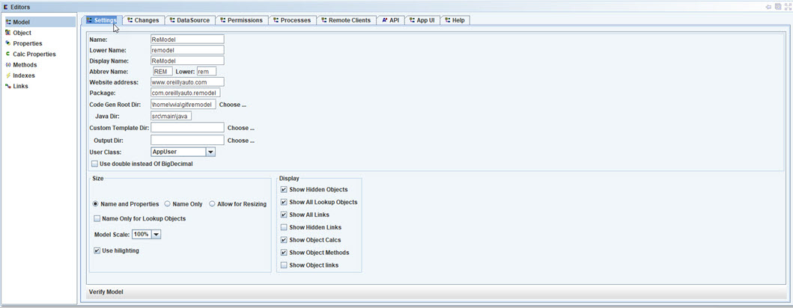
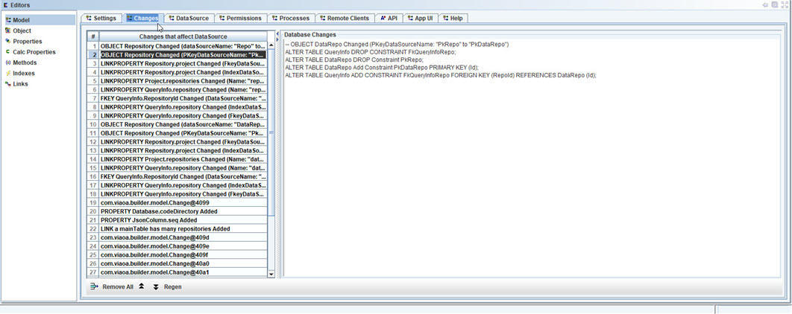
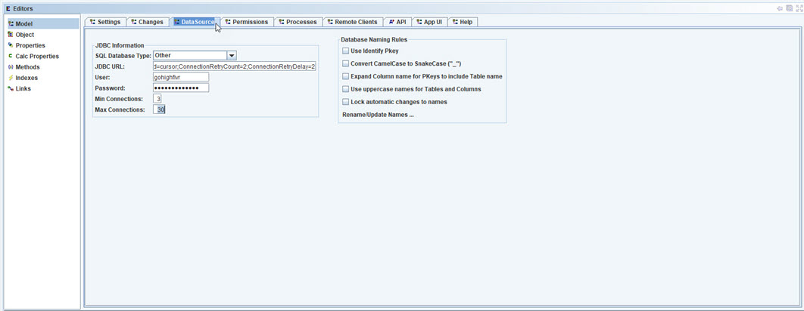
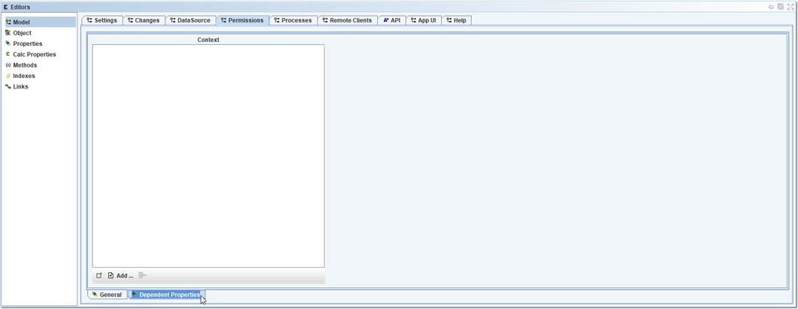
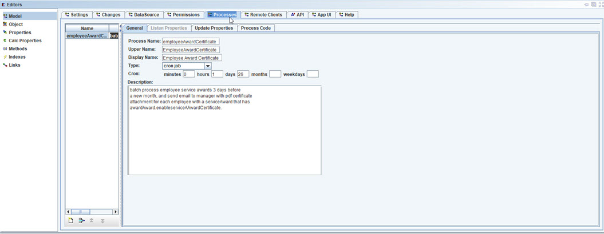
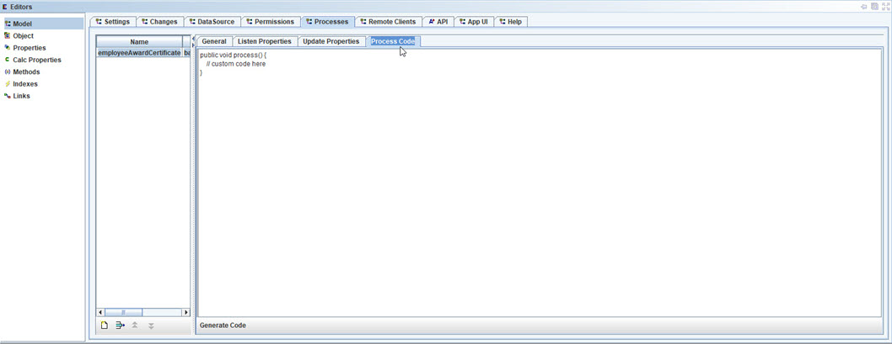
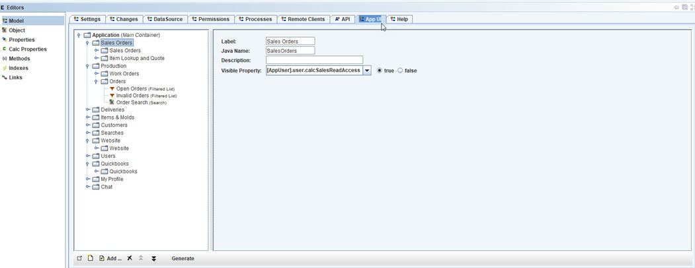
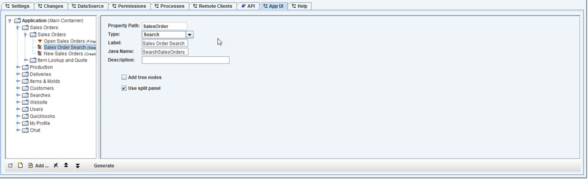
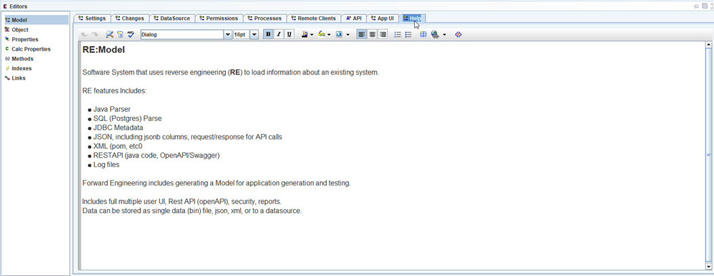

Model Editor
The model editor is used to define the information about a project.
Settings tab

- Name of project
- Lower Name of project
- Display Name
- Abbrev Name
- Website address for the project (if any).
- Package - Java package name or namespace.
- Code Gen Root Dir - root directory for project. Example: user/jdoe/git/sales
- Java Dir - directory under root, for generating Java. Example: src/main/java
- Custom Template Dir - used by code generator for teample projects, to include a custom template directory.
- Output dir - directory where custom template will be written.
- User Class - Object (/Class) used by code generator that defines the "User" object.
Must have the following properties: loginId, password, admin, firstName, lastName, inactiveDate, editProcessed (boolean, permission to edit process data).
- Use double instead of BigDecimal - setting for code generator to what type to use.
- Size options - sizing options of visual model.
- Display options - for objects and links in desktop.
- Verify Model - command to check model for potential problems.
Changes tab

Tracks model changes, so that code generation can create updates. For example: SQL & DDL changes to update database.
Select "Regen" when other changes to the projects Database have been made, so that DB specific
changes can be made.
Note: not all model changes will require DB changes. Always review and test before applying scripts.
Select clear or clear all once scripts have been created from the changes.
See code gen for database update scripts.
- Remove - remove selected change.
- Remove All - clear list. This can be done once all of the changes have been added to a release.
- Up/Down arrows - move changes.
- Regen - regen selected change.
- Database Changes - list of SQL and DDL for the change. This can be edited.
DataSource tab

Configure the default datasource to use, and it's default naming and settings.
See JDBC Editor for setting up Databases.
- Sql Database Type - select from JDBC Editor's list.
- JDBC URL - used to connect to the database.
- User - database User Id to use for accessing the database.
- Password - database User Password to use for accessing the database.
- Min Connections - used by connection pool.
- Max Connections - used by connection pool.
Datbase Naming Rules
- Use Identity Pkey - automatically create an auto number (sequence) Id property for each create Object.
- Convert CamelCase to SnakeCase ("_") - naming convention to use underscores for database names. Example: firstName would be first_name
- Expand Column name for PKeys to include Table Name - if checked, then the key property will be named using the Object name and "Id", else it will be "id".
- Use uppercase names for tables and columns - name convention where uppercase names will be used.
- Lock automatic changes to names - if checked then changes to model names wont affect database names. Otherwise, changes to the model will be reflected in the DB naming.
- Rename/update names - command that rename all database names.
Permissions tab

Model Permissions, to specify default permission settings for the model.
- Context Visibility Property - choose the property that allows a user (/context) to have visible access to model.
- Context Enabled Property - choose the property that allows a user (/context) to be enabed to make changes to model.
- Admin Property - property used to give user Admin access to model.

Additional dependent properties that affect the permissions.
- Use "Add..." to select other properties that determine if user (/context) has permission.
Processes tab

Model Processes, that can be defined to run as cron, timed, event based, and the type of thread handling.
- Process Name
- Upper Name
- Display Name
- Type - type of process: event, cron, run every x, and thread type to use.
- Enter information - for the type.
The property paths to listen for triggering the running of the process.
List of properties that are updated when the process runs.

Code that is ran for the process. Generate code will create a template using list of dependent & update properties.
Remote Clients tab
Remote/distributed Client Apps to create with this application. They will be able to access the model as if it were running on the same computer.
Clients can be any number and scale. For example, create a Client that will
manage all customer orders once they are created, and have it set up to run a pool of twenty of these behind a load balancer.
- Name
- Lower Name
- On Connect Code - code to run when a connection is made.
- On Disconnect code - run when disconnected.
API tab
This editor allows for adding custom APIs that will be added to the Models full REST API (including security).
Add a property to add to API request.
- Property Path - existing property path that was selected.
- Name - property name to use.
- Upper Name
- Input Type - type of input: one, many, range, no input (if it will be supplied).
Create a new property for the requiest, similar to creating a new property for an Object.
Define the response Object and properties.
Code to run.
Permissions for using this API.
Additonal properties that affect Permission for using this API.
Help for this API.
App UI tab
User Interface layout for the model. This is used to form the hierarchy for the UI, and then have it configured to use various UI layouts by
code generators.
For example, the "Outlook" layout, similar to the layout of the UI for OABuilder.
Code generators are able to take the UI layout for the model, and all of the other parts of the model (objects, properties, links, etc)
to create the UI.

User Interface layout for the model.
- Use new to create a new layout to the UI tree.
- Use add to add an Object, Property Path to an Object, Search, Filter, Create New, etc.
- Generato - button that will generate a default UI layout for the select Model.

User Interface component.
- Type - List All, Search, Create New. The options depend on the type of Object.
- Label - UI lable to show with component.
- Java Name used in generated code.
- Add tree nodes - if true, then the navigation tree will include leaf nodes for this object.
- Use split panel - if true, then the display window will be split into list and detail panes.
Help tab

Model Help, used for the project Help System.